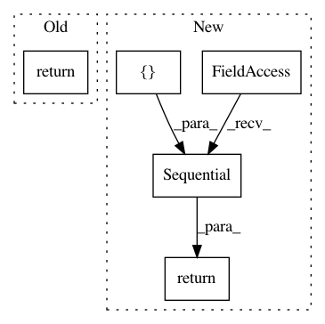

a7bbb96360a27fdc003952dd0ebf4c0db6328cfd,batchflow/models/torch/encoder_decoder.py,Decoder,body,#Any#Any#,270
Before Change
def body(cls, inputs, **kwargs):
kwargs = cls.get_defaults("body", kwargs)
decoder = kwargs.pop("decoder")
return DecoderModule(inputs=inputs, **{**kwargs, **decoder})
@classmethod
def head(cls, inputs, target_shape, classes, **kwargs):
kwargs = cls.get_defaults("head", kwargs)
After Change
def body(cls, inputs, **kwargs):
kwargs = cls.get_defaults("body", kwargs)
decoder = kwargs.pop("decoder")
layers = [("decoder", DecoderModule(inputs=inputs, **{**kwargs, **decoder}))]
return nn.Sequential(OrderedDict(layers))
@classmethod
def head(cls, inputs, target_shape, classes, **kwargs):
kwargs = cls.get_defaults("head", kwargs)
In pattern: SUPERPATTERN
Frequency: 3
Non-data size: 5
Instances
Project Name: analysiscenter/batchflow
Commit Name: a7bbb96360a27fdc003952dd0ebf4c0db6328cfd
Time: 2019-12-14
Author: Tsimfer.SA@gazprom-neft.ru
File Name: batchflow/models/torch/encoder_decoder.py
Class Name: Decoder
Method Name: body
Project Name: Microsoft/nni
Commit Name: 10d7ece1c34c5533262a54d20d974a3d04f0b7ce
Time: 2020-09-15
Author: 40699903+liuzhe-lz@users.noreply.github.com
File Name: examples/model_compress/model_prune_tf.py
Class Name:
Method Name: create_model
Project Name: analysiscenter/batchflow
Commit Name: f201c366f47c5b32331e042453ffe8cb23de001a
Time: 2019-12-22
Author: Tsimfer.SA@gazprom-neft.ru
File Name: batchflow/models/torch/encoder_decoder.py
Class Name: Decoder
Method Name: body